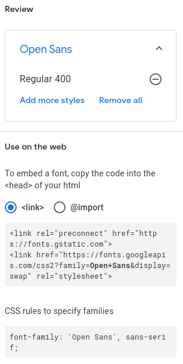

Fonts: Part 1
Choosing the right font has a huge impact on how visitors to your website experience it. A hard to read font for example may cause people to ignore your website. Even using a good font can be ruined by using an incorrect font size or having to much text on a page for visitors to read. Choosing the right font can create a strong identity for your brand and encourage users to come back. Later in the semester we will explore this concept in detail when we discuss User Experience Designers (UX Designer) and User Interface Designers (UI Designer), but for now lets focus on learning how to change the font of our website.
Assignment
-
CDN Fonts
A CDN, or Content Delivery Network, is a geographically distributed network of servers that provide high availability and performance by distributing a service spatially relative to end users.
In simple terms this means internet users can use a service anywhere in the world that is connected to the internet, and experience the same performance and availability as users in another location. A simple real life example is YouTube. YouTube appears to users as a single website but in reality there are hundreds of data centers, with thousands of servers, streaming YouTube videos to you. If you took a non-stop train ride across the United States and replayed the same YouTube video on your smart phone the entire trip, you would never notice that several different data centers streamed the video to you. As you traveled to far from one data center you came closer to another, so behind the scenes YouTube switched your video stream to the closer data center.
Using a CDN is one of the most popular (and easiest) ways to add a new font to your website. Please take a minute to explore Google Fonts, a CDN for web fonts.
-
Font Styles
Web fonts support different weights: light, regular, semi-bold, bold, extra-bold. Each of these weights has a corresponding number: 300, 400, 600, 700, 800. Not all web fonts support every weight level or combination of weight levels. Take a look at the page for the Open Sans Font and you will see these weight styles being demonstrated.
This is the font we are going to use for your Glitch website. Go ahead and click on the + Select this style text for the Regular 400 option. Regular 400 is the default font weight for web browsers and is the weight most users are familiar with seeing. If you selected the correct option a sidebar should have opened that looks like the following image.
Copy the top box that starts with <link and paste this in the head section of every HTML page in your Glitch project. Make sure to paste this code above the link tag that already exists. The following code example demonstrates what your head sections should look like now. Please do not copy and paste this code example into your project, it will ruin the title of your pages.
<head> <title>[PAGE TITLE]</title> <meta charset="utf-8"> <meta name="viewport" content="width=device-width, initial-scale=1"> <link rel="preconnect" href="https://fonts.gstatic.com"> <link href="https://fonts.googleapis.com/css2?family=Open+Sans&display=swap" rel="stylesheet"> <link rel="stylesheet" href="styles.css"> </head>Now copy the second line that starts with font-family and add this to the body rule in your styles.css file. Lets also add a new rule to the body that set the default font size to 16px. Here is what the completed changes should look like:
body { padding: 10px; font-family: 'Open Sans', sans-serif; font-size: 16px; } -
Additional Study
Spend at least 10 minutes reading and reviewing the following resources:
Note:
We do not expect you to memorize all of the tags or materials in these links yet. The goal is to familiarize yourself with the concepts and learn to recognize instances of the terms above.
-
Complete Assignment
Follow the instructions in canvas to prove you have completed this assignment. To get the URL to your live Glitch site click on Show in the upper left and then New Window. When the new tab loads copy the URL from the address bar.
Grading:
Do not submit the URL to your Glitch profile or your Glitch editor, it must be the URL to your live site.